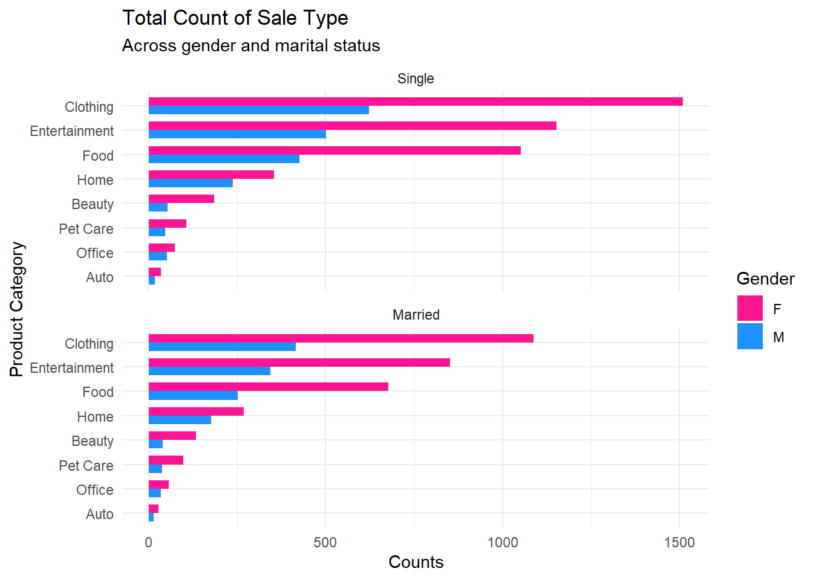
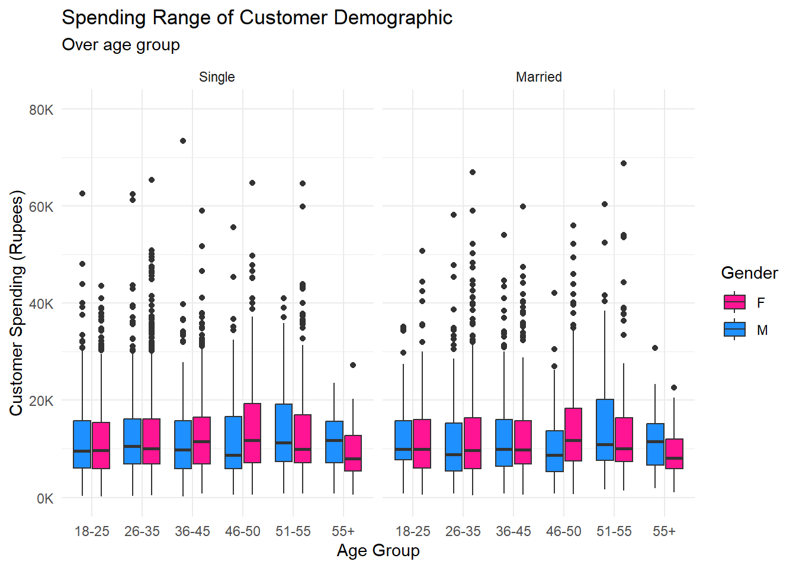
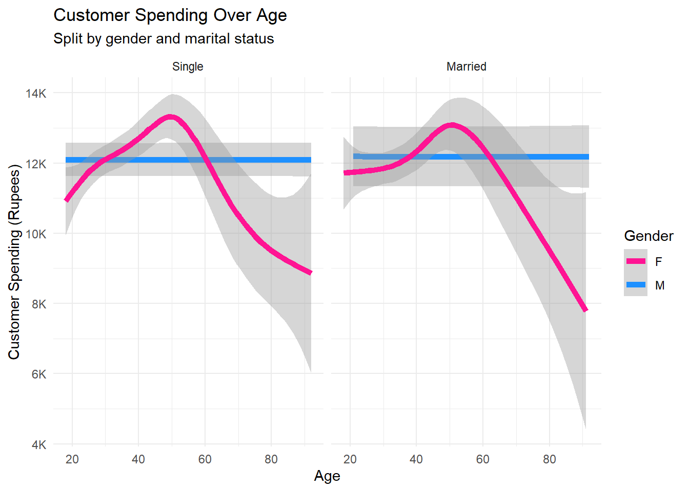

# Read in project data
diwali <- read.csv("data/diwali_sales_data.csv")
# Remove NA values
diwali <- diwali[-which(is.na(diwali$Amount)),]
# Recode marital status in case age value is illegal
diwali <- diwali |>
mutate(
Marital_Status = case_when(
Age.Group == "0-17" ~ 0,
Age < 21 & Gender =="M" ~ 0,
TRUE ~ Marital_Status
)
)
# Modify dataset according to project analysis
diwali <- diwali |>
mutate(
# Refactorizes the product category based on similarity between products
Product_Category = case_when(
Product_Category %in% c("Footwear & Shoes") ~ "Clothing",
Product_Category %in% c("Clothing & Apparel") ~ "Clothing",
Product_Category %in% c("Books") ~ "Entertainment",
Product_Category %in% c("Electronics & Gadgets") ~ "Entertainment",
Product_Category %in% c("Games & Toys") ~ "Entertainment",
Product_Category %in% c("Sports Products") ~ "Entertainment",
Product_Category %in% c("Decor") ~ "Home",
Product_Category %in% c("Furniture") ~ "Home",
Product_Category %in% c("Hand & Power Tools") ~ "Home",
Product_Category %in% c("Household items") ~ "Home",
Product_Category %in% c("Tupperware") ~ "Home",
Product_Category %in% c("Stationery") ~ "Office",
Product_Category %in% c("Veterinary") ~ "Pet Care",
TRUE ~ Product_Category
),
# Refactorizes the marital status to detail the meaning
Marital_Status = case_when(
Marital_Status %in% 1 ~ "Married",
Marital_Status %in% 0 ~ "Single"
),
# Calculate the price of item within each transaction
Price = Amount/Orders
)
# Remove lowest age group due to inherent issues
diwali <- diwali[-which(diwali$Age.Group == "0-17"),]
# Sort Gender factor level
diwali$Gender <- factor(diwali$Gender, levels = c("M", "F"))
# Sort Marital_Status factor level
diwali$Marital_Status <- factor(diwali$Marital_Status,
levels = c("Single", "Married"))Diwali Sales Trend Analysis
INFO 526 - Project 1
Abstract
In this project, our team analyzes the Diwali festival transaction dataset provided by the 2023 TidyTuesday repository. Our aim is to discover purchasing and spending trends of customers. We do this by focusing on two questions:
Introduction
(1-2 paragraphs): Brief introduction to the dataset. You may repeat some of the information about the dataset provided in the introduction to the dataset on the TidyTuesday repository, paraphrasing on your own terms. Imagine that your project is a standalone document and the grader has no prior knowledge of the dataset.
What are the most popular product category according to customer demographics?
The title should relate to the question you’re answering.
Introduction
(1-2 paragraphs): Introduction to the question and what parts of the dataset are necessary to answer the question. Also discuss why you’re interested in this question.
Because we are looking at transactional data, a natural question to ask is what is the demographic that engages in the highest number of transactions for any given product. Finding these patterns can be useful in guiding businesses in directing their efforts on attracting customers whose demographics make such purchases, or by highlighting potentially untapped customer groups. In order to develop strategies at the ground level, visible customer features, such as gender and marital status, were utilized to subset the customer groups. Transaction counts were tied to the product category since customer interest would likely fluctuate depending on the products sold.
Because product price of certain categories can differ greatly from those of another category, product price could affect a customer’s decision to make a purchase. This potential confounding from product price is assessed by finding individual order prices by taking the amount spent per order and comparing the range of values across the product categories.
Approach
(1-2 paragraphs): Describe what types of plots you are going to make to address your question. For each plot, provide a clear explanation as to why this plot (e.g. boxplot, barplot, histogram, etc.) is best for providing the information you are asking about. The two plots should be of different types, and at least one of the two plots needs to use either color mapping or facets.
A barplot was used to assess the relationship between product category and its interest within a customer demographic. This plot visualizes the number of transactions for each product category and is able to separate the bars according to the features of interest. The count of each transaction is particularly important since any sale leads to profit regardless of order size. The barplot’s visualizations also help give us both an absolute and relevant gauge of interest as the length of the bars can be compared to each other.
A boxplot was then used to assess if item price could have affected the number of transactions a product category had. The boxplot provides several important statistics such as the interquartile range that gives a clearer picture on how similar or different item prices between categories are. Because prices are likely to remain the same regardless of the customer, gender and marital status are not utilized for this plot.
Analysis
(2-3 code blocks, 2 figures, text/code comments as needed): In this section, provide the code that generates your plots. Use scale functions to provide nice axis labels and guides. You are welcome to use theme functions to customize the appearance of your plot, but you are not required to do so. All plots must be made with ggplot2. Do not use base R or lattice plotting functions.
# Check the number of product categories for refactor level
category_order <- as.data.frame(matrix(nrow = 8, ncol = 2))
category_order[,1] <- c("Auto", "Beauty", "Clothing", "Entertainment", "Food",
"Home", "Office", "Pet Care")
category_order[,2] <- as.integer(summary(as.factor(diwali$Product_Category)))
category_vector <- (category_order[order(category_order[,2]),1])
# Refactorizes the product category to sort the groups by count
diwali$Product_Category <- as.factor(diwali$Product_Category)
diwali$Product_Category <- factor(diwali$Product_Category,
levels = category_vector)
# Bar plot showing the number of customers for product category across gender
# and marital status
ggplot(data = diwali, aes(y = Product_Category, fill = Gender)) +
geom_bar(position = "dodge", width = 0.7) +
scale_fill_manual(values = c("lightblue", "pink")) +
# Reorder legend to match the order of the bar plot
guides(fill = guide_legend(reverse = TRUE)) +
ggtitle("Total Count of Sale Type",
"Across Marital Status and Gender") +
facet_wrap(~Marital_Status, ncol = 1) +
ylab("Product Category") +
xlab("Counts")
# Check the average order price of product category
diwali_price <- diwali |>
group_by(Product_Category) |>
summarize("Price" = median(Amount/Orders))
diwali_price <- as.data.frame(diwali_price)
category_vector <- diwali_price[order(diwali_price[,2]),1]
# Refactorizes the product category to sort the groups by count
diwali$Product_Category <- factor(diwali$Product_Category,
levels = rev(category_vector))
# Boxplot of average order values per category
ggplot(data = diwali,
aes(x = Product_Category, y = Amount/Orders)) +
geom_boxplot() +
scale_y_continuous(labels = label_number(scale = 1e-3, prefix= "₹",suffix = "K")) +
guides(fill = guide_legend(reverse = TRUE)) +
ggtitle("Boxplot of Order Price",
"Ordered by median order price") +
xlab("Product Category") +
ylab("Order Price (Rupee)")Discussion
(1-3 paragraphs): In the Discussion section, interpret the results of your analysis. Identify any trends revealed (or not revealed) by the plots. Speculate about why the data looks the way it does.
The barplot indicated that the number of female customers was more than double the number of male customers for most product categories. Additionally, customers who were single made more transactions than customers who were married across all product categories. The majority of transactions were made with clothing, entertainment, and food. Considering the transaction are for the festival, it is unsurprising that local food, games, and regional clothing would be the most sought commodities.
The boxplot showed that prices across product categories were within the whisker range aside from auto and pet care. Auto had the largest range and highest median price, which makes sense since auto sales are going to be more costly and variable compared to any of the other categories. The overlapping ranges of item price suggests that item price likely does not have an effect on a customer’s purchasing pattern.
How does age affect a customer’s total spending during the festival?
Introduction
(1-2 paragraphs): Introduction to the question and what parts of the dataset are necessary to answer the question. Also discuss why you’re interested in this question.
Approach
(1-2 paragraphs): Describe what types of plots you are going to make to address your question. For each plot, provide a clear explanation as to why this plot (e.g. boxplot, barplot, histogram, etc.) is best for providing the information you are asking about. The two plots should be of different types, and at least one of the two plots needs to use either color mapping or facets.
We plan on assessing how age is related to spending total when age is either a categorical variable (age group) or continuous (age). A boxplot is implemented when age group is used. This visualization is useful in that it shows several important statistical values such as the interquartile range and makes comparison of the total spending ranges. In addition, gender is also assessed since results from the previous analysis suggests that
When age is treated as a continuous variable, a regression is implemented
Analysis
(2-3 code blocks, 2 figures, text/code comments as needed): In this section, provide the code that generates your plots. Use scale functions to provide nice axis labels and guides. You are welcome to use theme functions to customize the appearance of your plot, but you are not required to do so. All plots must be made with ggplot2. Do not use base R or lattice plotting functions.
# Modify data for Q2
diwali.Q2 <- diwali |>
group_by(User_ID, Age) |>
summarize(
"Gender" = first(Gender),
"Age_Group" = first(Age.Group),
"Marital_Status" = first(Marital_Status),
"Total" = sum(Amount))# Boxplot to show customer spending within age group
ggplot(data = diwali.Q2,
aes(x = Age_Group, y = Total, fill = Gender)) +
geom_boxplot() +
scale_y_continuous(labels = label_number(scale = 1e-3, prefix= "₹",suffix = "K")) +
scale_fill_manual(values = c("lightblue", "pink")) +
coord_cartesian(ylim = c(0, 80000)) +
guides(fill = guide_legend(reverse = TRUE)) +
ggtitle("Spending By Age Group") +
xlab("Age Group") +
ylab("Total (Rupees)")
# Sort Gender factor level
diwali.Q2$Gender <- factor(diwali.Q2$Gender, levels = c("M", "F"))
# Plot Q2 data
ggplot(data = diwali.Q2, aes(x = Age, y = Total, color = Gender)) +
geom_smooth(linewidth = 2) +
scale_y_continuous(labels = label_number(scale = 1e-3, prefix= "₹",suffix = "K")) +
facet_wrap(~Marital_Status, ncol = 2) +
scale_color_manual(values = c("lightblue", "pink")) +
guides(color = guide_legend(reverse = TRUE)) +
labs(title = "Spending Insights: Gender, Age, and Marital Status") +
ylab("Total (Rupees)")
# Split data into two subsets
diwali_single <- diwali.Q2[which(diwali.Q2$Marital_Status == "Single" &
diwali.Q2$Gender == "M"),]
diwali_married <- diwali.Q2[which(diwali.Q2$Marital_Status == "Married" &
diwali.Q2$Gender == "M"),]
# Generate linear models
single_lm <- lm(Total~Age, data = diwali_single)
married_lm <- lm(Total~Age, data = diwali_married)
# Round values of tidy objects
tidy_single <- tidy(single_lm)
tidy_single[,2:ncol(tidy_single)] <- round(tidy_single[, 2:ncol(tidy_single)], 2)
tidy_married <- tidy(married_lm)
tidy_married[,2:ncol(tidy_married)] <- round(tidy_married[, 2:ncol(tidy_married)], 2)
# Generate a nice table with kable
single_table <- kable(tidy_single, "html") %>%
kable_styling(full_width = FALSE)
# Generate a nice table with kable
married_table <- kable(tidy_married, "html") %>%
kable_styling(full_width = FALSE)
# Display the table
single_table
married_tableSingle Men
| term | estimate | std.error | statistic | p.value |
|---|---|---|---|---|
| (Intercept) | 12586.53 | 676.70 | 18.60 | 0.00 |
| Age | -13.32 | 17.37 | -0.77 | 0.44 |
Married Men
| term | estimate | std.error | statistic | p.value |
|---|---|---|---|---|
| (Intercept) | 12531.36 | 1304.79 | 9.60 | 0.00 |
| Age | -9.02 | 32.40 | -0.28 | 0.78 |
Discussion
(1-3 paragraphs): In the Discussion section, interpret the results of your analysis. Identify any trends revealed (or not revealed) by the plots. Speculate about why the data looks the way it does.
The boxplot shows that interquartile range of the total rupees spent in a transaction does not fluctuate across age groups or gender. Outliers appear to be less prevalent for the youngest and oldest age groups. Results suggest that
Regressions of the total customer spending suggests that marital status does not have an effect on total rupees spent on a transaction. Interestingly, women exhibit a polynomial relationship between age and spending total while men showed a flat line. Slope analysis for men suggest that the slope is insignificant at a 0.05 \(\alpha\)-level, and that men purchase total is unaffected by age. The differences in regressions could be due to different shopping approaches between genders such as men working with a specific budget in mind and women shopping according to needs.
Limitations/Further Analysis
A limitation of the dataset is that the dataset does not list the date that a transaction was made. This lack of information prevented us from performing an analysis of transaction trends over years. Access to such information could enhance the analysis by giving information that can visualizations that could map regress product category transaction counts onto year.
References
Diwali Sales Repository:
https://github.com/rfordatascience/tidytuesday/tree/master/data/2023/2023-11-14